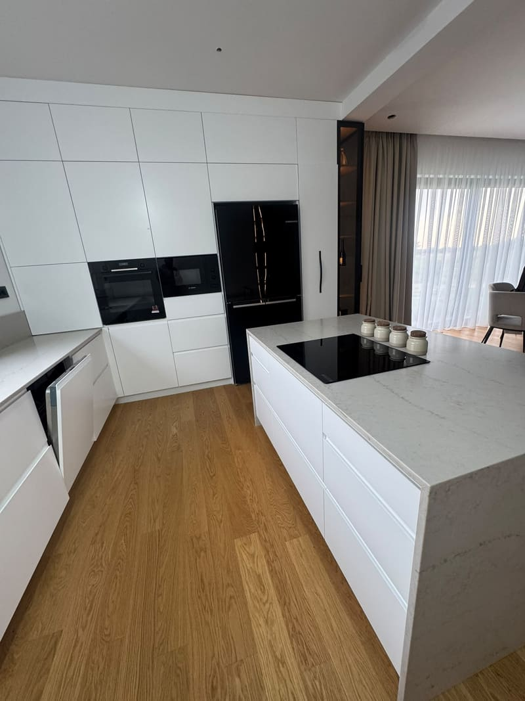

Kuhinje po meri
Kuhinje prema merama vašeg prostora, iz naše radionice u Novom Sadu. Pre izrade dobijate 3D projekat, a garancija je od 2 do 5 godina.
Kuhinja prema vašem prostoru
Kuhinja je mesto koje koristite svakog dana, zato je pravimo prema vašem prostoru i načinu na koji kuvate. Raspored elemenata prilagođavamo onome što vam treba: više fioka, ostrvo za pripremu hrane, šank za doručak ili elementi do plafona za više mesta.
Pre izrade dobijate 3D projekat i vidite raspored, materijale i boje pre nego što počnemo. Frontove pravimo od iverice Fundermax, EGGER ili KRONOSPAN, farbanog ili furniranog medijapana, furnira ili punog drveta, a radnu ploču, ručke i rasvetu biramo zajedno sa vama.
Kuhinju izrađujemo u našoj radionici, a dostavljamo i montiramo je u Novom Sadu i u celoj Srbiji. Garancija je od 2 do 5 godina, u zavisnosti od elementa.
Šta pravimo
Ugaone kuhinje
U obliku slova L ili U, sa radnom pločom koja prati zidove.
Kuhinje sa ostrvom
Slobodno ostrvo sa radnom pločom, fiokama ili pločom za kuvanje.
Kuhinje sa šankom
Šank u nastavku radne ploče, za doručak i barske stolice.
Male kuhinje
Za garsonjere i male stanove, sa elementima do plafona.
Staklene pregrade
Klizna vrata sa crnim ramom, koja odvajaju kuhinju od ostatka prostora.
Naše kuhinje


Kuhinje iz bliza
-

Svetla kuhinja sa šankom i kamenom
Šank i radna ploča u kamenu, donji elementi u tonu oraha, gornji svetli do plafona.
7 fotografija -
Klasična kuhinja sa vitrinama
Klasični frontovi sa profilom, vitrine do plafona i merdevine za gornje police.
Video sa zvukom -

Bela kuhinja sa ostrvom
Bela fronta bez ručki, ostrvo sa kamenom pločom i vitrina sa LED rasvetom.
Još 6 fotografija i video u Radovima -
Klizna vrata
Staklena pregrada sa crnim ramom odvaja kuhinju od drugog dela sobe.
Video


Materijali
- Fundermaxiverica
- EGGERiverica
- KRONOSPANiverica
- Medijapanfarbani i furnirani
- Furnirprirodni drveni list
- Puno drvohrast, bukva
Česta pitanja o kuhinjama
Da. Pre izrade dobijate 3D projekat sa rasporedom elemenata, materijalima i bojama.
Od iverice Fundermax, EGGER ili KRONOSPAN, farbanog ili furniranog medijapana, furnira ili punog drveta.
[OKVIRNI ROK IZRADE]